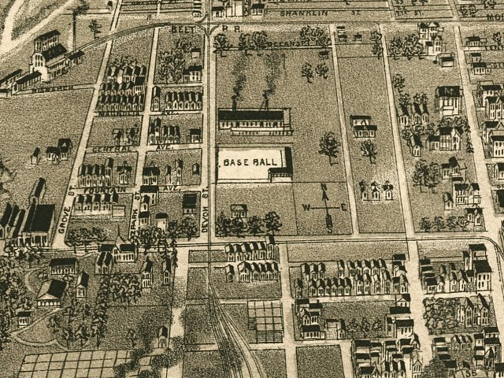

| Evansville, Indiana - 1888 |
|---|
 |
| Perspective map of the city of Evansville, Ind. 1888. H. Wellge, sk. Wellge, H. (Henry) CREATED/PUBLISHED Milwaukee, American Publishing Co., c1888. NOTES Perspective map not drawn to scale. Bird's-eye-view. Includes illus. and index to points of interest. REFERENCE LC Panoramic maps (2nd ed.), 193 |